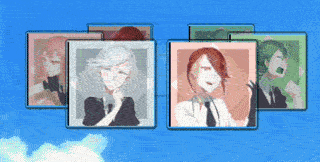
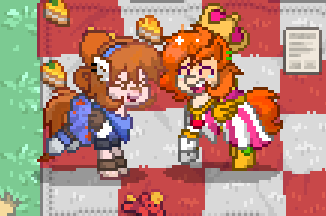
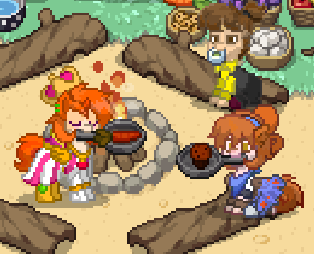
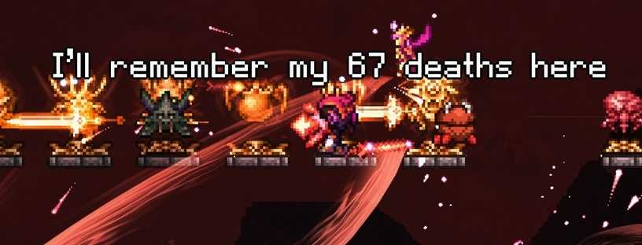

Date: September 27, 2026
I've spent almost a month distracted and almost forgot the changes I need to make here lol.
Last week I installed Linux for the first time. I asked ChatGPT which distro would be the best so I could customize the entire interface. And they recommended Arch Linux 😭
Venturing into KDE
With a lot of learning, I installed Arch with the KDE Plasma interface, and now I'm creating my entire ambience. Since I became a fan of Frutiger Aero environments months ago, I decided to make my entire interface look like it.

*My Linux-made version of the classic Win7 carousel gadgetDate: August 22, 2026
After the big update I made to the website, I checked out a classic game I was already familiar with but had never actually played.
It was PONY TOWN!!!
And it was really fun to play with my friend Tewi. I created the T.M. Opera O and Coral Glasses skins, and she created the Furioso, Naoya, and Kohane skins.

*Here we were laughing for no reason...Then we were invited to a party, and when we arrived on their island, we discovered that we could roast all kinds of food over the campfire! lol

*And here we were camping and eating. P.S. She gave me a BURNT marshmallow!Date: August 15, 2026
Today I kept myself focused on improving the site's design and functionality.
At afternoon I crafted the Legendary Zenith Sword. That was my last objective on my multiplayer journey.
I made this new image function just to show this last print from the gameplay:

*Amarul's last quote before the end (she died more than that)!Date: August 14, 2026
I spend my day learning html and css just to give this site a better clean face.
After spending hours on the tutorials designs at w3schools.com
I finally have a polished look! Yay!!!
I'm loving the results!
Date: August 12, 2026
Today I played Terraria with my friend Amarul and created this amazing site!
I still have a lot of updates to do and I don't know when I'll get to them.
I will add more entries here as time goes on...